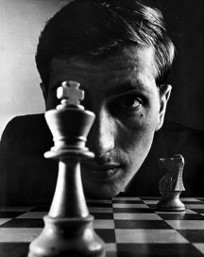

Bobby Fischer Champion, Jouer d'échecs
"Si l'on supprimait les gènes qui sont à l'origine de l'autisme ou d'autres troubles comme la psychose maniaco-dépressive, le monde appartiendrait aux conformistes ennuyeux sans pensée originale.
Temple Grandin "Penser en images: Et autres témoignages sur l'autisme, 1995
«En réalité, je vis des hauts formidables, des bas terribles et un stress permanent. Vous n’aimeriez pas connaître les deux derniers états par lesquels je passe»
Elon Musk

Le Syndrome d'Asperger fait partie des Troubles du spectre de l’autisme (TSA), qui recouvrent un champ très large et de nombreuses variations. En effet, si certains autistes souffrent de formes sévères avec un handicap important, ce n’est pas le cas des autistes Asperger, qui n’ont aucun trouble du développement intellectuel, ni handicap.
On estime que 1% de personnes seraient autistes en France, parmi lesquelles 7 à 10% seraient Asperger. Ce Syndrome les amène à avoir un autre rapport au monde et à autrui. Schématiquement, le cerveau absorbe et traite une masse inouïe d’informations cognitives et sensorielles. Lorsqu’il sature, il privilégie le détail au détriment de l’ensemble du contexte.
Ce qui est particulièrement complexe à appréhender pour les autistes Asperger, ce sont les interactions sociales, le jeu des conventions sociales, et la communication avec autrui. Cela peut donner lieu à des quiproquos ou à une franchise abrupte, sans filtre, voire à un comportement incongru, comme dire à son interlocuteur que sa conversation est ennuyeuse et tourner les talons ou croiser un voisin dans la rue sans le saluer, faute de l’avoir reconnu, ou encore faire bande à part à la cantine ou lors de pots au bureau. Ce qui est particulièrement complexe à appréhender pour les autistes Asperger, ce sont les interactions sociales, le jeu des conventions sociales, et la communication avec autrui. Cela peut donner lieu à des quiproquos ou à une franchise abrupte, sans filtre, voire à un comportement incongru, comme dire à son interlocuteur que sa conversation est ennuyeuse et tourner les talons ou croiser un voisin dans la rue sans le saluer, faute de l’avoir reconnu, ou encore faire bande à part à la cantine ou lors de pots au bureau.
Il est souvent vrai que les personnes Asperger ont un QI supérieur à la moyenne. Si tous n’ont pas l’étoffe de Nobel, beaucoup disposent de capacités mnésiques et d’analyse prodigieuses ou de dons musicaux (oreille absolue, aptitude à apprendre seul à jouer d’un instrument, à dessiner en détail une cathédrale de mémoire…). Reste que cette intelligence exceptionnelle n’est souvent pas reconnue, ou tardivement, notamment professionnellement, du fait de la maladresse dans les interactions sociales.
Sur le plan cognitif, les Asperger ont un fonctionnement intellectuel se situant dans la moyenne, mais il arrive, et c’est apparemment le cas d’Elon Musk, que le niveau intellectuel se situe « dans la tranche supérieure de la population », en association avec « une capacité mnésique excellente ainsi qu’une capacité à développer des passions et des talents remarquables ». Et selon le Dr Asperger, dont les travaux n’ont été diffusés que dans les années 80, « ces individus extravagants peuvent atteindre un certain niveau de réussite et s’intégrer socialement ». Sur le plan neurosensoriel, l’autisme Asperger se caractérise par une hyper ou hyposensibilité de certains sens (vue, ouïe, toucher, goût, odorat), des gestes souvent maladroits, une posture particulière, une expression du visage souvent figée et peu vivante ». Mais aussi une « tendance forte à l’intellectualisation des sentiments, des ressentis et des sensations, des difficultés à regarder l’interlocuteur dans les yeux, des tics moteurs, de possibles difficultés à reconnaître les visages (prosopagnosie) ».
1 femme serait Asperger pour 4 hommes. La raison? Elles se démènent pour s’adapter et donner le change, en excellant dans l’art du mimétisme.
Le trouble du spectre autistique se caractérise par des difficultés dans les interactions sociales, associées à des intérêts restreints et des comportements répétés.
A savoir ! Il est difficile pour une personne Asperger de comprendre le langage non verbal ( haussement d’épaule, sourire las, etc...) et les données abstraites. Les expression idiomatiques ou imagées comme « couper les cheveux en quatres » seront comprises au premier degré ! »
A savoir: 80 % des autistes ont deja subit du harcèlement scolaire
Privilégier les consignes par écrit confier des tâches précises, d’établir un plan de travail clairement défini,avec des objectifs précis et réalisables. Le flou, l’ambiguïté, les changements de dernière minute les déstabilise. Anticiper au maximum leur agenda, planifier ce qui peut l’être, et éviter les modifications de dernière minute Hiérarchiser clairement leurs priorités et les encadrer de façon structurée Leur permettre de travailler dans un environnement calme Accepter leurs remarques parfois « crues », et comprendre qu’ils sont incapables d’exprimer leur pensée de façon nuancée Au contraire, être nuancé pour leur formuler des reproches, et être généreux en encouragements
Créativité Personnification des objets ( parle à son serveur) Persévérance ( Capacité à travailler énormément hors mode échec) Fidèle Prend la personnalité de tout ce qu’elle voit
Perfectionniste Sensibilité aux détails Droiture Pensée analytique Logique indéniable Mémoire extraordinaire après acquisition des données de bases Objectivité et honnêteté
Prend en paramètre une fonction à la fois. ( travaille mieux en petite tâche) Fatigabilité importante face aux difficultés. Ne supporte pas les bruits forts. Pas de variateur sur l’humeur, bouton on/off. dysgraphie (trouble qui affecte l’écriture dans son tracé.)
Une personne atteinte du SA n’aime pas l’échec et va tout faire pour tenter de réussir tout ce qu’elle entreprend. Elle est donc persévérante. Elle dit ce qu’elle pense, n’a pas ou peu de préjugés (racisme, sexisme…). Elle peut évoluer, compenser ses manques et améliorer ses comportements si son entourage l’aide et si on lui en donne les moyens.